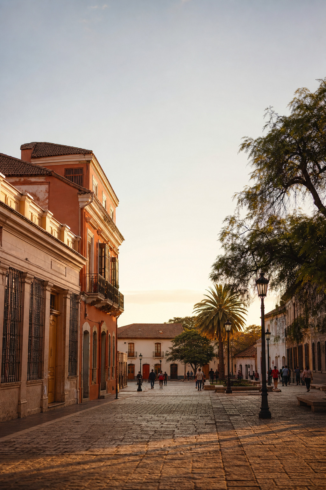
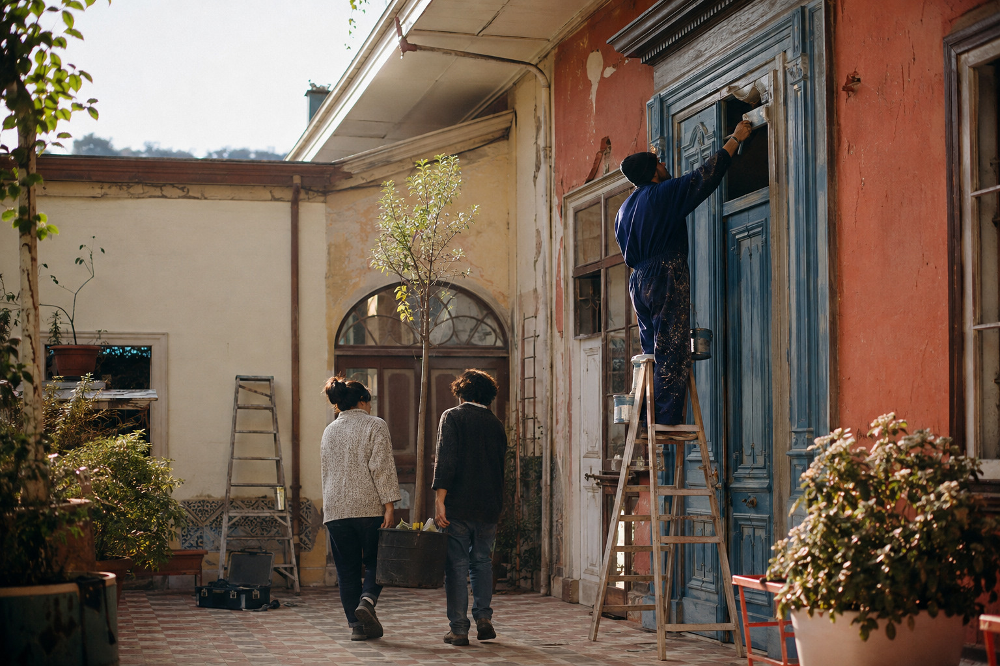
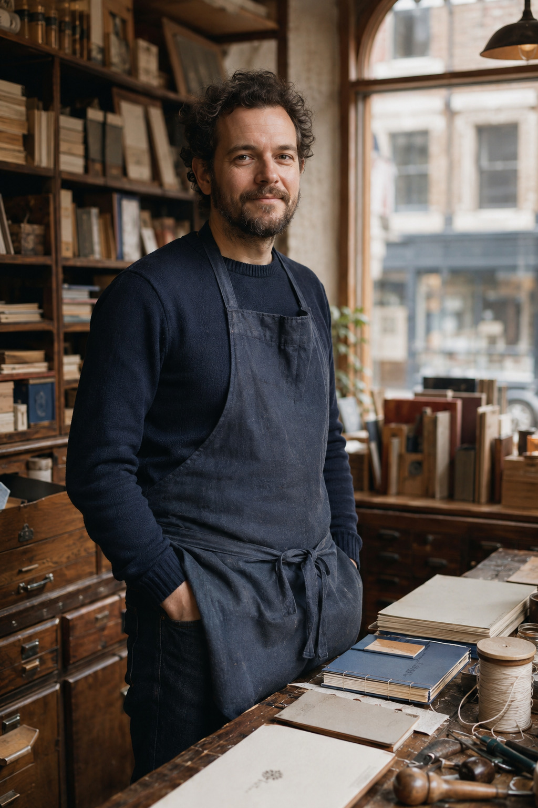

Librería El Pasaje
Compra y venta. Martes a sábado de 11 a 19.
La misma revista con la estructura que discutimos: dos páginas por sección, enfrentadas, apertura con fotografía grande a la izquierda y continuación con datos a la derecha. Veinticuatro páginas, múltiplo de cuatro, encuadernable como cuadernillo.
Tres cosas para mirar: el reportaje de las páginas 8–9, donde la fotografía cruza el lomo; las páginas 6 y 18, que abren sin fotografía porque no la tenían; y los faldones, que ahora sólo caen en las páginas de la derecha y nunca en el reportaje ni en la página de datos.
1 · Portada
Estuvo doce años con las ventanas tapiadas. La pintaron entre vecinos, en catorce sábados, y el lunes ya había alguien pidiendo la llave.
Catorce sábados, once familias y una discusión larga sobre el color de la puerta. Cómo se recuperó Balmaceda 148 sin un peso municipal.

Seis días de aviso para mover una feria de veinte años. Qué pasó con los cuarenta puestos, y qué pide la gente que vive de eso.
Esta revista empezó en una asamblea de marzo, cuando alguien dijo que el barrio tenía muchas cosas pasando y ningún lugar donde contarlas.
No es un boletín municipal ni el diario de la agrupación. Es un espacio del barrio, y por eso las cartas ocupan dos páginas y los datos que publicamos llevan siempre su fuente.
Nos comprometemos a tres cosas. Publicar lo que podamos verificar. Corregir a la vista cuando nos equivoquemos. Y decir siempre qué es publicidad y qué no.
Este primer número salió con lo que había: cinco fotografías, mucha caminata y varias tardes de sábado. El próximo depende de lo que ustedes manden.
Hay dos páginas de cartas y una de respuestas porque una revista que no contesta es un boletín. Si algo de lo que publicamos está mal, escríbanos: lo corregimos en el número siguiente, con el mismo tamaño de letra con que nos equivocamos.
Tampoco vamos a esconder la parte comercial. Los avisos pagan la imprenta, van rotulados como lo que son y nunca disfrazados de nota.

La carta editorial deja de compartir página con el sumario y se lee como lo que es. El retrato de quien firma cierra la página: en una revista de barrio importa saber quién habla.
4–5 · Noticias brevesLa galería de Concha y Toro llevaba tres años con cinco cortinas abajo. En septiembre abrieron una librería de viejo y un taller de cerámica. Los dos arriendos se firmaron el mismo día, con el mismo corredor y por tres años.
Entre Balmaceda y la plaza. Quedan cuatro apagados hacia el sur.
12 de octubrePasa al sábado mientras duren los trabajos en la calzada.
Desde el 5Entró en junio. En septiembre llegó una respuesta que no fija fecha.
En cursoVeinte cupos en la sede. Inscripción por WhatsApp hasta llenar.
Hasta el 30Tres años sin arriendo a cambio de reparar la casona. Ver página 8.
Junio de 2026El cargo quedó vacante en agosto. Se vota en la asamblea del martes 7.
Martes 7Dos horas, salida desde la plaza, apto para niños. Sin inscripción.
Domingo 19Reportado tres veces desde julio. Sigue sin cerrar el expediente.
PendienteSe pidió por segunda vez. La primera solicitud es de marzo.
Sin respuestaMartes y jueves de 17 a 20, y sábados en la mañana.
VigenteAhora entra por el pasaje. Sacar la basura después de las 20.
Desde el 1Seis horas en el tramo norte. Guardar agua la noche anterior.
Jueves 23La de las pulgas sigue mensual y se suma una de plantas.
ConfirmadoDe once a diecinueve solicitudes respecto de septiembre.
OctubreTreinta y un años. El local queda disponible desde noviembre.
15 de octubreSe instalaron seis botones en el tramo sur. Faltan cuatro.
En cursoLas cifras de esta página salen del registro de la agrupación y de las respuestas municipales recibidas hasta el cierre. Cuando un dato no se pudo confirmar, no se publica.
La segunda página se ganó su lugar: tiene cifras propias, no relleno. Sin esas cifras, breves se quedaba en una página.
6–7 · Avances de la agrupaciónSeis gestiones abiertas, con fecha de entrada y estado real. Sin adornos.
Primera solicitud sin respuesta. Se reingresó en septiembre con fotografías.
Respuesta parcial: reconocen el problema, no fijan fecha de obra.
Repuestos once de quince postes. Cuatro quedaron fuera del presupuesto.
Aprobado. Rige desde octubre, con cargo a rendir el gasto de luz.
En evaluación. Se pidieron tres cotizaciones y falta una por llegar.
El recorrido 412 dejó de entrar al casco. Se pidió reponer la parada.
La mitad de las gestiones que se pierden no se pierden por la respuesta: se pierden porque nadie guardó el número de ingreso. Anótelo, sáquele una fotografía y mándelo al grupo.
Si su gestión ya lleva más de cuatro meses, avísenos. Publicamos el listado completo cada tres números.
Conviene además fotografiar el problema con algo que dé escala: una zapatilla junto al bache, una moneda junto a la grieta. Las solicitudes con fotografía se responden antes, y no es casualidad: son las que no se pueden discutir.
Cuando la respuesta llegue, guárdela aunque diga que no. Una negativa por escrito sirve para insistir; una negativa por teléfono no sirve para nada.
Página 6 abre sin fotografía: no había una que valiera la pena para esta sección, así que la banda de color hace el trabajo. Es la variante que probamos antes, ahora en su lugar natural.
8–9 · Reportaje centralCatorce sábados, once familias y una discusión larga sobre el color de la puerta.
La casa de Balmaceda 148 estuvo doce años con las ventanas tapiadas. Nadie sabía de quién era. Se decía que de una sucesión, que de un banco, que de nadie.
En marzo, dos vecinas fueron al conservador y pagaron el certificado. Eran cuatro herederos y ninguno vivía en la comuna.
El certificado costó cuatro mil doscientos pesos y lo pagaron a medias. Es el gasto más rentable que ha hecho la agrupación en diez años.
Tres de los cuatro contestaron el correo. El cuarto nunca apareció, y su firma sigue faltando en una carpeta que espera en la sede.
El acuerdo se firmó en junio: la agrupación repara, los herederos no cobran arriendo por tres años.
La primera jornada fue el 6 de julio y llegaron nueve personas. El resto lo cuenta el patio: se picó el estuco suelto y se cambiaron catorce tejas.
Se discutió tres sábados seguidos si la puerta iba azul o verde. Ganó el azul, por nueve votos contra siete, y porque quedaban dos tarros de ese color en la bodega.
Nadie llevó un registro de horas. Cuando se les pregunta cuánto trabajaron, todos responden lo mismo: los sábados.
La cuenta final del material fue de un millón ciento veinte mil pesos, juntados con dos bingos, una rifa y el aporte de la ferretería de la esquina, que descontó el treinta por ciento.
La puerta, ya terminada. Ganó el azul por nueve votos contra siete. Fotografía de [nombre].
Queda pendiente lo caro: el techo del ala poniente necesita cambio completo de estructura. La cotización más baja llegó a cuatro millones ochocientos mil y no incluye el andamio.
Se decidió postular a un fondo concursable que abre en enero. Mientras tanto el ala poniente queda cerrada con candado y un cartel escrito a mano.
El comodato vence en junio de 2029. Antes de esa fecha hay que decidir si se renueva, se compra o se devuelve.
Foto grande a sangre en la apertura; en la continuación, una fotografía chica con su pie y las cifras de la obra. Ninguna de las dos páginas lleva aviso: el reportaje es donde la revista pone su mejor trabajo.
10–11 · Voces del comercio[Nombre y apellido], en el taller de calle Concha y Toro. Fotografía de [nombre].
Llegó en 1996, cuando la calle todavía tenía adoquines y tres almacenes. Hoy queda uno. Dice que el oficio no cambió tanto como el barrio.
Encuaderna tesis, libros de familia y, últimamente, cuadernos que la gente le encarga para regalar. La mesa es la misma que compró el primer año.
Cuando le preguntan si va a jubilar, contesta que no sabe hacer otra cosa, y que la mesa no cabe por la puerta.
El arriendo le subió dos veces en cinco años. La segunda estuvo tres meses buscando local y no encontró ninguno con luz de norte.
Empezó a enseñar los jueves. Vienen seis personas y ninguna había cosido un pliego antes.
La galería, en septiembre. Dos locales abrieron el mismo día. Fotografía de [nombre].
La galería tuvo once locales en los años noventa y llegó a tener cinco cortinas abajo al mismo tiempo. Con los dos que abrieron en septiembre vuelve a siete ocupados de once.
La ficha es lo que la sección no tenía sitio para poner cuando era una sola página: dirección, horario y contacto, que es lo que el vecino necesita para ir.
12–13 · Memoria y patrimonioCalle Concha y Toro al llegar a la plaza. Cedro, herrajes originales, mil novecientos veintitantos. Fotografía de [nombre].
En el catastro de 1998 había ciento cuarenta puertas de madera anteriores a 1940. En el de 2024 quedan sesenta y una.
No se perdieron por un plan. Se perdieron de a una: una filtración, un presupuesto ajustado y una puerta metálica que llega el mismo día.
El catastro lo hicieron cuatro personas caminando las trece cuadras del casco durante seis sábados de agosto, con un cuaderno y un teléfono.
Anotaron dirección, material, estado y si conservaba los herrajes. Nadie pidió permiso para fotografiar una puerta desde la vereda, y nadie los echó.
Reponer una hoja de cedro con los mismos herrajes cuesta alrededor de novecientos mil pesos. Una puerta metálica estándar cuesta ciento ochenta mil y llega en cuarenta y ocho horas. La comparación explica casi todo el catastro.
Hay un punto intermedio que casi nadie conoce: se cambia sólo el tablero podrido, se conserva el marco y los herrajes, y el gasto baja a un tercio.
De las sesenta y una que quedan, treinta y cuatro están en buen estado, dieciocho necesitan reparación y nueve se pueden perder en dos años si nadie interviene.
Las nueve en riesgo están en cuatro inmuebles, y tres de esos cuatro tienen problema de techumbre. La puerta casi nunca se pudre sola: se pudre porque le cae agua encima.
La agrupación pidió en septiembre una señalética para las puertas catastradas: una placa chica, con el año y el material, atornillada al marco. Sigue en evaluación.
Quien quiera sumarse al próximo catastro no necesita saber de arquitectura. Necesita zapatillas cómodas, un cuaderno y una mañana de sábado.
El listado completo, calle por calle, está disponible en la sede para quien lo quiera consultar. No lo publicamos entero acá por una razón simple: son seis páginas de direcciones y esta revista tiene veinticuatro.
Fuente: catastro propio de la agrupación, agosto de 2024, cotejado con el registro municipal de 1998. Datos de prueba, sólo para maqueta.
Sesenta y tres solicitudes, nueve meses y un plazo legal que casi nadie cumple.
El plazo legal es de veinte días hábiles. Cuatro de las cinco áreas lo superan, y patrimonio —la que más nos toca— es la más lenta de todas.
Este observatorio no mide si la respuesta fue buena. Mide sólo cuánto tardó en llegar. Una respuesta que dice «se está evaluando» cierra el reloj igual que una que resuelve el problema, así que el tiempo real de solución es bastante peor que estos ochenta y siete días.
El detalle área por área va en la página siguiente, con la fuente completa al pie.
Las sesenta y tres solicitudes se ingresaron por la Ley de Transparencia, que obliga a responder en veinte días hábiles. No es un favor ni un trámite de buena voluntad: es una obligación legal, y cualquier vecino puede usarla sin costo y sin abogado.
Publicamos esto todos los trimestres. No para pelear con nadie: para que exista un registro. Cuando una gestión demora ciento cuarenta días, conviene que quede escrito en alguna parte que demoró ciento cuarenta días.
La demora no se reparte pareja dentro del año. Entre enero y marzo el promedio fue de cincuenta y un días; entre julio y septiembre, de ciento nueve. La diferencia coincide con la formulación del presupuesto municipal.
Veintidós solicitudes siguen sin respuesta al cierre de esta edición. Diez superan los ciento veinte días, que es cuando la ley permite reclamar. Reclamamos por tres.
Cómo leer estas cifras. Cuentan días corridos desde el ingreso hasta la primera respuesta, aunque sea parcial.
Las tres más lentas. La señalética patrimonial lleva ciento cuarenta y dos días sin respuesta. El alcantarillado de Balmaceda, ciento treinta y uno. El permiso de uso de la casona demoró ciento veintiséis y terminó aprobado.
En las tres, la primera respuesta llegó recién después de insistir por segunda vez. Esa insistencia no reinicia el plazo legal, pero en la práctica es lo que mueve el expediente.
El próximo número publica el mismo cuadro con los datos de octubre a diciembre, para poder comparar semestres.
Si usted ingresó una solicitud y quiere que entre en el registro, mándenos el número de ingreso, la fecha y el área. No necesitamos el contenido: sólo las fechas.
Fuente: solicitudes por Ley de Transparencia ingresadas por la agrupación entre enero y septiembre de 2026. Datos de prueba, sólo para maqueta.
La página 15 es impar y sin embargo no lleva aviso. Es la regla que ya existe en el taller: no se vende espacio debajo de la declaración de fuentes, porque un aviso pagado ahí pone en duda lo que la página acaba de afirmar.
16–17 · Comunidad y serviciosLa sede, un martes. Asistencia jurídica gratuita, con hora pedida por WhatsApp. Fotografía de [nombre].
Vivienda. Oficina municipal, lunes a jueves de 9 a 13. Llevar cédula y el certificado de residencia, que se pide en la junta de vecinos.
Asistencia jurídica. Martes en la sede, de 18 a 20, con hora pedida por WhatsApp. Es gratuita y atiende un abogado del barrio.
Retiro de escombros. Se solicita por el formulario municipal y demora cerca de tres semanas. No retiran material de construcción de obras particulares.
Reciclaje. El punto limpio de la plaza recibe vidrio, papel y latas de lunes a sábado hasta las 18. Pilas y aceite van al de la avenida.
Salud. El consultorio entrega horas de matrona los lunes desde las 8 y se acaban temprano. Para adulto mayor hay una fila aparte que casi nadie usa.
Transporte. El recorrido 412 dejó de entrar al casco en agosto. La parada más cercana quedó en la avenida, a seis cuadras.
Si se corta la luz. Anote la hora y llame igual, aunque el vecino ya haya llamado. El registro por dirección es lo que después permite reclamar la compensación.
Adulto mayor. El programa de acompañamiento visita dos veces por semana y está buscando voluntarios. Se pide una tarde al mes, no más.
Pintura del ala poniente. Llevar brocha si tiene.
Sede. Se vota el uso de la sala grande.
Plaza. Inscripción de puestos hasta el jueves.
Veinte cupos. Materiales incluidos.
Salida desde la plaza. Dos horas, apto para niños.
Fondos para el techo del ala poniente.
Con la comisaría del sector. Sala grande.
Último día para el taller de noviembre.
Función al aire libre. Llevar silla o manta.
Desparasitación y vacuna antirrábica, sin costo.
Sede. Se entrega un balde por familia inscrita.
Punto de encuentro en la esquina. Bolsas y guantes incluidos.
Para publicar aquí, escriba antes del día 20 con nombre, fecha, hora, lugar y un contacto. Se publica gratis todo lo que sea del barrio y sin fines de lucro.
Así se ve un faldón sin vender. No se disimula ni se rellena con contenido editorial: se ofrece. Con veinticuatro páginas hay ocho de estos, y en un primer número es normal que la mitad salga vacía.
18–19 · Cartas al directorPublicamos con nombre y calle. Editamos por extensión, nunca por contenido.
Llevo veinte años poniendo puesto los domingos. El cambio al sábado se avisó con seis días. Entiendo que hay obras, pero seis días no alcanzan para avisarle a la clientela.
[Nombre], Concha y ToroLos postes nuevos se agradecen. Falta el tramo desde la esquina hacia el sur, que es por donde pasan los que vuelven del turno de la tarde.
[Nombre], Los AlmendrosVivo al frente. Doce años miré esa casa tapiada. El sábado que sacaron las tablas me puse a llorar en la vereda.
[Nombre], BalmacedaSomos varios los que dejamos agua en la reja. No es para que se queden: es porque en enero el pasto quema. Si alguien puede aportar un bebedero fijo, avise por el grupo.
[Nombre], Balmaceda¿Cualquiera puede poner aviso o hay que ser socio? Lo pregunto por mi hija, que hace tortas y no tiene local.
[Nombre], Los AlmendrosTiene razón. El aviso lo publicamos nosotros el mismo día que nos llegó, y eso fue tarde. Vamos a pedir que los cambios de la feria se avisen con quince días y a publicarlos en la agenda apenas se confirmen.
En el número anterior dijimos que el almacén de la esquina cerró en 2019. Cerró en 2021. Nos lo hizo ver la hija del dueño. La corrección va aquí y no en una nota al pie, porque el error fue en portada.
Los veinte cupos se llenaron en dos días y quedó gente afuera. Se repite en noviembre con el mismo cupo: la sala no da para más. Los que quedaron en lista tienen prioridad.
No hay que ser socio. Cualquier vecino o emprendimiento del casco puede poner aviso, con o sin local. El faldón al pie de página es el más barato; el módulo de la página 20 es el siguiente. Escriba y le mandamos la tarifa.
Publicamos el pedido y lo llevamos a la asamblea del 7. Si alguien tiene un bebedero o puede hacer uno, avise por el grupo o déjelo dicho en la sede.
El tramo sur quedó fuera del presupuesto de este año, no de la solicitud. Reingresamos el pedido el 28 de septiembre y va a aparecer en el observatorio del próximo número, con su fecha de entrada.
No publicamos cartas anónimas, insultos, amenazas, acusaciones sin respaldo ni datos personales de terceros. Si una carta alude a alguien, le ofrecemos responder en la misma edición.
La segunda página de cartas es la que hace la diferencia entre un buzón y una revista: aquí la redacción contesta y corrige a la vista, con el mismo tamaño de letra que el error.
20–21 · PublicidadCompra y venta. Martes a sábado de 11 a 19.
Tesis y libros de familia por encargo. [teléfono].
Arriendo por día o por semana. Retiro en [dirección].
Arriendo y venta en el barrio. Tasación sin costo.
Copias, cerraduras y aperturas de urgencia. Turno de noche.
Abarrotes y flores por encargo. Lunes a domingo de 8 a 21.
Ocho módulos por página. Tarifa y cierre de material en revista@cascohistorico.cl
Reparación de puertas y ventanas antiguas. Tablero podrido cambiado, marco y herrajes conservados.
[dirección] · [teléfono] · Presupuesto sin costo
El pliego de publicidad va entero, con rótulo en las dos páginas. Separarlo del contenido editorial es más honesto que repartir avisos sueltos, y se vende mejor porque el anunciante sabe dónde queda.
22–23 · CrónicaLa calle, un sábado a las siete. El primer sábado de feria tuvo la mitad de los puestos. Fotografía de [nombre].
El aviso llegó un lunes y la feria se mudaba el sábado siguiente. Seis días. Veinte años de domingo y seis días para avisarle a la gente.
El primer sábado llegaron veintidós de los cuarenta puestos habituales. Los otros dieciocho se quedaron en la casa, y varios ni se habían enterado.
El aviso se pegó en tres postes y se mandó por un grupo de WhatsApp que no todos tienen. La feria lleva veinte años en el mismo lugar y el mismo día.
Doña Marta, que pone puesto desde 2004, se enteró el viernes por la tarde, cuando pasó a comprar hielo.
El segundo sábado llegaron treinta y uno. El tercero, treinta y ocho. La clientela tardó tres semanas en enterarse, y quien vende fruta no aguanta tres semanas malas.
Doña Marta, que pone puesto desde 2004, lo resume así: el domingo la gente sale a pasear, el sábado sale a hacer trámites. No se compra igual.
Las obras de la calzada terminan en diciembre y el municipio confirmó que la feria vuelve al domingo. Nadie ha dicho qué día exacto.
La agrupación pidió que el próximo cambio se avise con quince días y por escrito. La respuesta, si llega dentro del plazo legal, debería estar antes del próximo número.
Mientras tanto, los sábados a las siete de la mañana hay veintidós carpas armándose en la misma calle de siempre, con menos gente y la misma hora de levantada.
Hay un efecto que nadie previó. Con la feria en sábado, los dos almacenes de la cuadra vendieron más el domingo que antes, porque la gente que salía a pasear ya no compraba en los puestos.
Uno de los almaceneros lo dice sin ninguna culpa: a él le convino. También dice que prefiere que la feria vuelva, porque la calle sin feria el domingo queda muerta y eso al final le pega a todos.
La agrupación lleva el punto a la asamblea del martes 7, con la respuesta municipal si alcanza a llegar. Quien tenga puesto y quiera opinar tiene ahí su espacio.
Lo que pide la feria no es que no se hagan las obras. Pide quince días de aviso y que el cambio se publique donde la gente lo vea: en la misma calle, no en un grupo cerrado.
Parece poco. Para veintidós familias que viven de eso, quince días son la diferencia entre un mes malo y un mes perdido.
Esta revista la hace la Asociación Casco Histórico de Puente Alto. Se reparte gratis y se financia con bingos, rifas y los avisos de sus páginas.
El próximo número cierra el 20 de noviembre.
Fotografías de prueba, generadas para maqueta. No son registro documental y no deben publicarse como fotografía periodística, según indica assets/demo/LEEME.md.